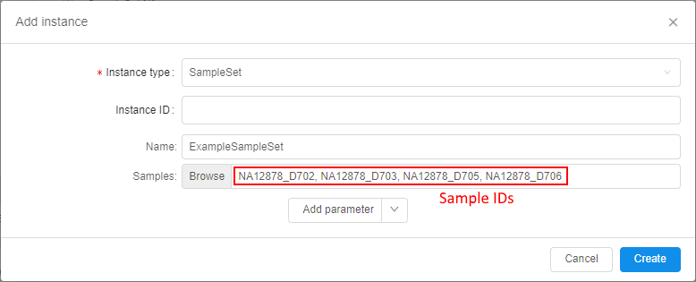
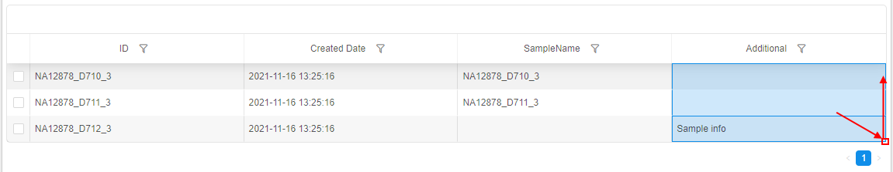
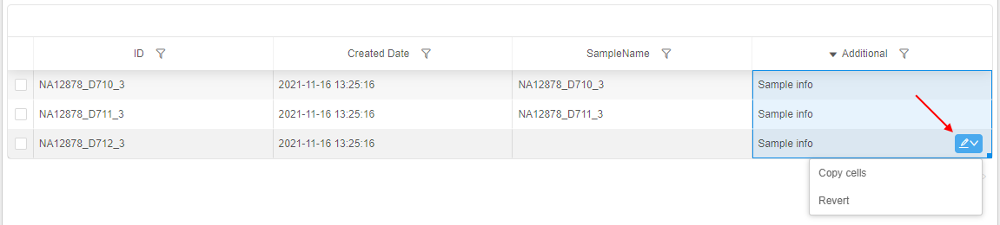

5.1. Add/Delete metadata items
To manage metadata items, a user shall have WRITE permission for the parent folder and the ROLE_ENTITY_MANAGER role. For more information see 13. Permissions.
A user is able to add metadata item manually.
Add metadata item
To add metadata item the following steps shall be performed:
- Navigate to Metadata of the desired folder or project.
Note: or navigate to specific metadata entity folder, e.g.Participant,Sample, etc. - Click the Additional options button and select + Add instance item:
- The pop-up will be opened, e.g.:
- Fill up the fields:
- Instance type (required). Choose the metadata item type, e.g.
Participant,Sample, etc.
Note: if you create an instance from the specific metadata entity folder, the type would be set by default, but you would be able to change it.
Note: this dropdown list contains all available instance types (from all Platform metadata entities) - Instance ID (optional). It should be a unique identification for a new metadata item. If it is not specified, it will be autogenerated during the item creation in the
UUID4format - values of the specific entity parameters (non-required) - at the picture above, there are: R1_Fastq, R2_Fastq, SampleName
Example of the filled pop-up:
- Instance type (required). Choose the metadata item type, e.g.
- Click Add parameter to set a new attribute for the creating metadata instance. It could be:
- String attribute. You can add an attribute with any name and value.
- Link to a metadata entity. You can choose a link to what a metadata entity you want to add as an attribute, e.g. set a link to a participant existing in the Platform as a sample's attribute.
- Click the Create button - the new metadata item will be created and shown in the chosen metadata entity table:
Note: the created date for each entity is added automatically (see the column "Created Date")
Add SampleSet item
Additionally to described above, users may create SampleSets (or other "Container-like") entities from the GUI.
To create a new SampleSet:
- Click the + Add instance button in the Metadata section:

- Choose the SampleSet instance type:
Additional fields for the creating SampleSet will appear automatically. - Provide the information for the new SampleSet:
- InstanceID (optional) - if it is not specified, it will be autogenerated during the item creation in the
UUID4format - Name - name of the SampleSet object
- Samples - Click the Browse button to select a list of Samples, which will be associated with the creating SampleSet



- InstanceID (optional) - if it is not specified, it will be autogenerated during the item creation in the
- Click the Create button to add the new SampleSet:

- Open the SampleSet metadata class to view the new SampleSet:

Edit metadata items
To edit any metadata item - click its row in the table, e.g.:
Values of the clicked metadata instance will be displayed in the "Attributes" panel, where columns and metadata instance values represent corresponding keys and values.
Here, you can edit any instance value except ID and Created Date.
To edit existing value:
- Click the desired value in the "Attributes" panel, e.g.:
- Specify a new value to the field.
- Click any space out of that field or press Enter key. Specified value will be saved automatically and will appear in the metadata table, e.g.:

To remove existing value:
- Click the remove button near the desired key-value pair in the "Attributes" panel, e.g.:

- Confirm the deletion:

- This attribute will be removed for the selected instance:
Note: if attributes of the same key will be removed in the described way for all metadata instances - the corresponding column will disappear from the table.
To create a new instance field:
- Click "+ Add" button in the "Attributes" panel:
- Specify key (name of the field) and value for a new attribute, e.g.:

- Click the Add button to confirm.
- If the specified key doesn't match any existing field name of the current metadata entity - a new field will be created and the corresponding column will automatically appear in the metadata table:
For more information about working with the "Attributes" panel see 17. CP objects tagging by additional attributes.
Field values autofill
You can use an autofill feature to faster fill metadata instances with data that are based on data in other instances in the same column/row.
To use an autofill feature:
- Hover over the cell in the metadata table, which value you wish to use in other cells, e.g.:

- Click the right-bottom corner of the cell (on the small blue rectangle) and move the mouse holding the left button - vertically (if you wish to autofill cells in the column) or horizontally (if you wish to autofill cells in the row), e.g.:
 - Once you will release the mouse button - selected cells will be autofilled by the value of the cell that you've dragged (the cell value will be copied to all selected cells):

- In the right-bottom corner of the selected area, the additional control will appear. Click it:
 - If you want to cancel autofilling - click the Revert item from the list.
If you want to perform autofilling again - click the Copy cells item from the list. - Click any cell out of the selected area or press Esc key to confirm changes:

Note: if the cell that will be dragged has the format ending by the number - then during the autofilling, the number series will be atomatically continued for the whole selected area (to increasing), textual part of the value format will stay the same. I.e. if the cell has value
SN_001, then via the autofilling the new appeared values will beSN_002,SN_003, etc.:
Copy/move metadata items
You can copy or move metadata items from one folder to other:
- Navigate to Metadata of the desired folder or project.
- Open specific metadata entity folder (e.g.
Participant,Sample, etc.):
- Select items you want to copy/move. The Bulk operation panel is enabled.
- Click the V button next the "Show only selected items" control and select the Copy item in the list:
- The pop-up appears:
Here the Folder/Project should be selected where selected Metadata items will be copied/moved. - Select the Folder/Project you want using the tree on the left panel, e.g.:
- Click the Copy button to create a copy of the Metadata items in the selected folder or the Move button if you wish to move items to selected folder from the original one.
The pop-up will be closed. - Open the folder selected at step 6, see that Metadata items were copied/moved to it:
Delete metadata item
To delete metadata item the following steps shall be performed:
- Navigate to the metadata entity table that contains the metadata item you want to delete.
- Tick one metadata item or more - the Bulk operation panel is enabled.
- Click the V button next the "Show only selected items" control and select the Delete item in the list:
- Confirm your choice in the dialog window:

- The items are removed.